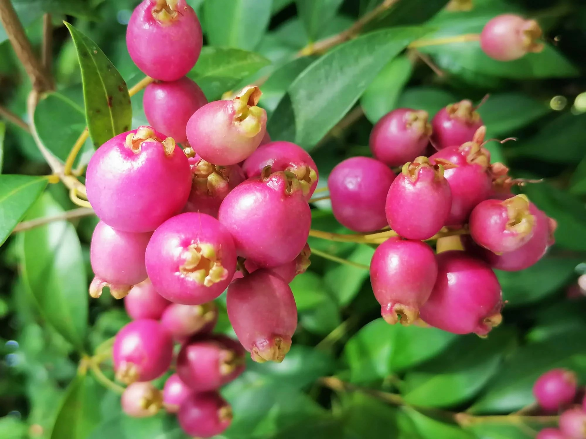

|  |
Overview
Creek Lilly Pilly, known by is a summer flowering, winter fruiting evergreen tree, native to Australia and belonging to the myrtle family. It can grow up to 5m in the garden untouched. It has rough bark, green smooth leaves and maroon edible berries.
|
|
Where it grows
Native to Eastern Australia, the Creek Lilly Pilly grows in Eastern Queensland, Eastern NSW and Eastern Victoria along creek banks within tropical, subtropical and temperate rainforests. Creek Lilly Pilly is tolerant of a wide variety of soils, but thrives in acidic soil.
Nutritional value identified by First Nations People
Creek Lilly Pilly fruits were known among indigenous Australians as “medicine berries” and were believed to help prevent colds and infections. As the vibrant berries are very high in vitamin C, which naturally strengthens the immune system, they would have been a very effective treatment for the indigenous Australians. They were also used for their antibacterial properties and typically mashed and spread over skin irritations and sores. Because of the pigmented nature of Creek Lilly Pilly berries indicates the presence of anthocyanins, compounds with antioxidant properties which protect cells from the external environment, it was very beneficial when used as a natural antibacterial paste.
How we use (your fruit) today
Creek Lilly Pilly berries are high in vitamin C, vitamin E, magnesium and potassium, this makes them an extremely nutritious fruit which can be utilised in a variety of medicinal and other ways. Creek Lilly Pillys are an extremely versatile plant, its berries even more so when it comes to cooking. The tart flavoured berries can be eaten raw, tossed in salads and used in baked goods such as cakes, muffins, biscuits and more. Because Creek Lilly Pilly berries have a sweet-tart flavour, as they are very high in vitamin C, they are commonly used as meat marinades as well. While Creek Lilly Pilly is no longer used for medicinal purposes, it is still used as ornamental decoration and is a very desirable plant to have grown in the garden as it can be used as a decorative natural fence or durable privacy screen.
Why we should farm (your fruit)
As Creek Lilly Pilly grows along creek banks, in temperate and tropical climates, Creek Lilly Pilly can also easily be grown during drought conditions, making it a durable and beneficial crop for farms. Creek Lilly Pilly requires no specific soil to grow, meaning that it can easily be planted and harvested alongside already existing plants and crops to add to The vitamin rich fruits can easily be preserved for a long time after they are harvested because of their high acid content, leaving them as a refreshing, accessible snack. As Creek Lilly Pilly responds well to heavy pruning, it is easily managed and harvested from.
Fun fact: Lilly Pilly berries were the first native fruit tasted by Captain Cook's exploratory crew in the Botany Bay region as they were a much enjoyed snack by First Nations people on the east coast for thousands of years before.
|